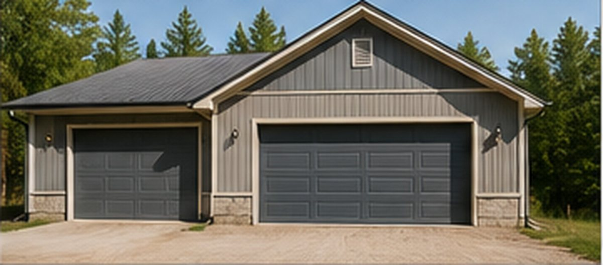
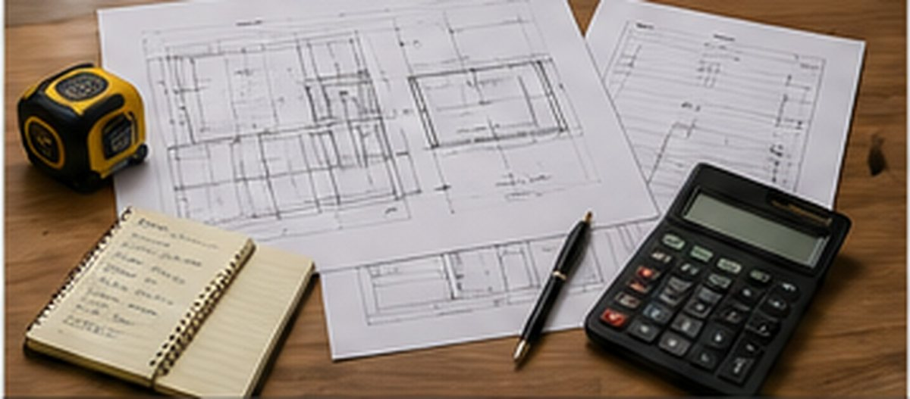
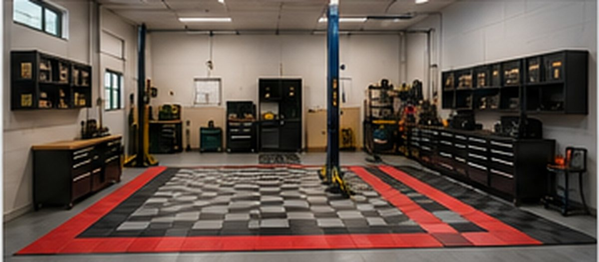

Existing condition
Photos, measurements, files, constraints, risks, and goals.
Examples
These representative examples show how Highway 38 moves from an existing condition to a visual concept, usable plan, quote, managed work, or business workflow.
Example classification: These are representative and hypothetical demonstrations. They are not customer claims, guaranteed results, engineering documents, permit drawings, or final contractor prices.
Photos, measurements, files, constraints, risks, and goals.
Layouts, options, routes, assemblies, workflows, or comparisons.
Quantities, assumptions, exclusions, handoff details, and review triggers.
Proposal, approval, work, vendors, purchases, billing, proof, and records.
Browse by current scope

Property & Outdoor
Problem: Water, access, grades, outdoor storage, lighting, or site-use concerns are unclear.
Visual: Existing-condition map, drainage direction, zones, routes, and improvement options.

Construction & Remodeling
Problem: The project idea exists, but dimensions, options, sequence, trade handoffs, and budget scope are scattered.
Visual: Concept layouts, option comparison, measured sketches, work sequence, and contractor-ready notes.

Garages & Shops
Problem: Vehicles, tools, storage, equipment, utilities, and work zones interfere with each other.
Visual: Zone layout, equipment placement, storage wall, utilities, safety clearance, and material flow.
CNC & Manufacturing
Problem: Setup, cycle time, tooling, workholding, inspection, capacity, and risk need to be defined before quoting.
Visual: Process sequence, fixture concept, assumptions, bottlenecks, inspection points, and Good/Better/Best paths.

Automation & Process
Problem: Labor, handling, machine loading, safety, inspection, and production flow are limiting output.
Visual: Cell layout, robot or conveyor path, sensors, guarding, operator interaction, and control points.
Business Systems
Problem: Requests, customers, quotes, jobs, vendors, purchases, invoices, files, and approvals live in separate places.
Visual: Intake map, status flow, records, permissions, dashboard, approval gates, and exception handling.
Connected platform examples
Existing condition, concepts, layouts, quantities, assumptions, and next actions.
Photos, notes, Price Book, line items, options, proposal, approval, and job handoff.
Customers, jobs, vendors, purchases, expenses, invoices, payments, files, reports, approvals, and recovery.